profile assets — local preview
Each asset is shown against both a dark and a light card, the way GitHub will render it.
portrait
portrait.svg (on dark)
portrait.svg (on light)
skill radar
radar-dark.svg
radar-light.svg
language radar
radar-langs-dark.svg

radar-langs-light.svg

metrics (generated on GitHub, not locally)
metrics.isocalendar.svg